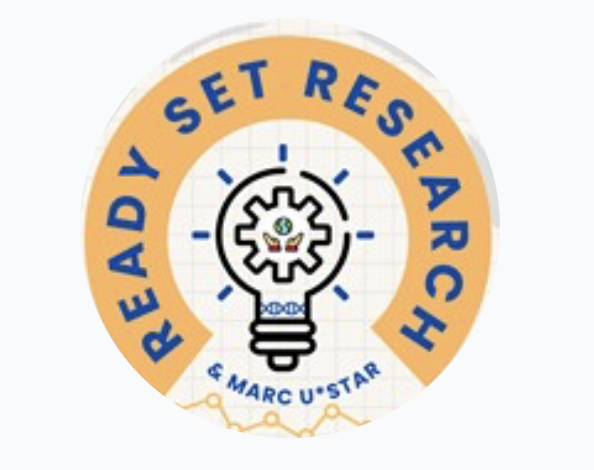

Here at Infinite Loops our purpose is to create an environment in which individuals interested in Computer Science
can come together to seek assistance on current endeavors, establish a sense of community, explore personal curiosities
in regards to the field, and most importantly, have fun.
The purpose of Institute of Electrical and Electronic Engineers (IEEE) is to disseminate knowledge of the theory and
practice of all aspects of electrical engineering, computers, electronics, radio, allied branches of engineering or the
related arts and sciences, as well as the furtherance of the professional development of members.
The Buffer Overflow club of St. Marys University is a group of students who are interested in cybersecurity.
It is a place for networking and increasing students interest in cybersecurity careers and diversity in the
cybersecurity workforce of the nation. The club welcomes students from different majors.
An organization that offers an environment, not only to women but all students in Engineering,
that fosters positive reflection and social, academic, and professional growth!
Our goals for WSTEM include offering seminars and workshops pertaining to marketing oneself and professional
development, panels with women in STEM industries, and the opportunity to attend the SWE National Conference
and help facilitate attendance to other professional STEM conferences.
Email Society of Women in STEM: swe.stmu@outlook.com
Follow our RattlerTracks for events: JOIN OUR RATTLERTRACKS

Ready, SET, Research
Our mission is to foster a thriving community of undergraduate research here on campus, and to further and
educate on the theory and practice of research. We aim to provide members with the opportunity for networking,
conducting research as part of a team under a mentor, and learn the required skills to be successful in various
fields of research through socialization with like-minded peers and workshops. The club welcomes any St. Mary's
student that displays a fervent interest in research pertaining to science, engineering, mathematics technology.